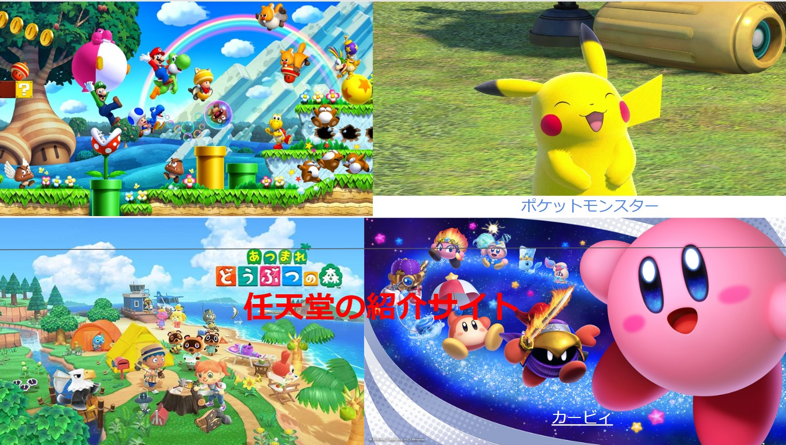

SCHOOL CLASS

- 大学1年生：チーム開発
- 任天堂の紹介サイトを作成
こちらは、画像にあるゲームをクリックすると、
そのゲームの情報だったり、キャラクターのページに飛ぶようにしました。
自分は星のカービィ担当でしたので、それぞれの能力についてまとめました。
- 大学2年生：チーム開発
- ユーザー認証機能を入れたサイト開発
こちらは、自分の学校用メールアドレスを入力すると右の画像のような ページに飛びます。
そして、下にある授業の文字をクリックするとその授業の解説が載っているページに飛ぶようにしました。
もし、アドレスが間違っていると中のこのページに飛べないようにしました。
- 大学3年生：チーム開発
- chat gptを用いたフィットネスアプリの開発
利用者情報の分析、対話型指導、食事と栄養情報の提供そして質問に対するAIの即時回答できるwebサイトを開発しました。
自分は主にPMとしてフロントエンド、バックエンドの開発を担当しました。このプロジェクトを通じて、PMとしての立ち回りやチーム内のコミュニケーション能力が向上しました。